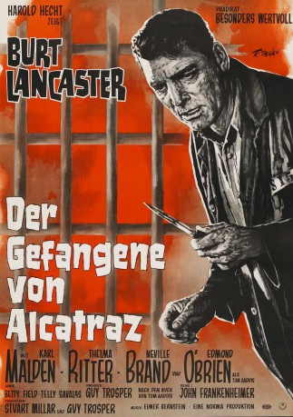

#3713 Der Gefangene von Alcatraz
Alternativ: Birdman of Alcatraz
Auszeichnungen: für 4 Oscars nominiert 1 BAFTA-Awards gewonnen
 
 IMDB-Wertung: 7.8 / 10
IMDB-Wertung: 7.8 / 10  Metascore: 0
Metascore: 0 
Gefangen hinter kalten Mauern, den Blick leer, durch Gitterstangen in die Welt gerichtet, fristet Robert Strout seine lebenslange Strafe. Der zweifache Mörder vegetiert geistig dahin und hat jegliches Interesse an seinem eigenen Leben verloren. Bis zu dem Tag, als er die Liebe zu den Vögeln entdeckt und das Dasein für ihn wieder einen Sinn ergibt. Er beginnt in seiner Zelle seine gefiederten Freunde zu beobachten und zu züchten. Die Lebensfreude, die er daraus zieht, wird jedoch abrupt gestört, als der neue Gefängnisdirektor Strout nach Alcatraz verlegen lassen will. Dort ist seine zum Lebenswerk gewordene Arbeit nicht erlaubt. Der Film basiert auf einer wahren Geschichte. Der Häftling Robert Strout wurde während seiner 43-jährigen Gefangenschaft zu einem der populärsten Vogelexperten im Land. Burt Lancaster schaffte es, dem Charakter so viel Stärke und sympathische Wesenszüge einzuhauchen, dass Zuschauerbriefe tatsächlich die Begnadigung des wirklichen Robert Strout verlangten.
Jahr: 1962
Dauer: 147 Minuten
FSK: 16
Land: USA Studio: United ArtistsTonspuren:
Untertitel:
Auflösung: 1080p (1792x1080) Größe: 11366 MB
Genre: Drama, Biographie
Regisseur:  John Frankenheimer, Charles Crichton
John Frankenheimer, Charles Crichton
Drehbuch: Victoria Bedos
Soundtrack:
Darsteller:
 Burt Lancaster als Robert Franklin Stroud
Burt Lancaster als Robert Franklin Stroud Karl Malden als Harvey Shoemaker
Karl Malden als Harvey Shoemaker Thelma Ritter als Elizabeth Stroud
Thelma Ritter als Elizabeth Stroud Neville Brand als Bull Ransom
Neville Brand als Bull Ransom Telly Savalas als Feto Gomez
Telly Savalas als Feto Gomez Edmond O'Brien als Tom Gaddis
Edmond O'Brien als Tom Gaddis Hugh Marlowe als Albert Comstock
Hugh Marlowe als Albert Comstock Whit Bissell als Dr. Ellis
Whit Bissell als Dr. Ellis Harry Holcombe als Editor , uncredited
Harry Holcombe als Editor , uncredited Len Lesser als Burns , uncredited
Len Lesser als Burns , uncredited- Michael Masters als Guard , uncredited
 Kermit Maynard als Alcatraz Captain of Guards , uncredited
Kermit Maynard als Alcatraz Captain of Guards , uncredited David McMahon als Inmate , uncredited
David McMahon als Inmate , uncredited- Betty Field als Stella Johnson
- Crahan Denton als Kramer
 James Westerfield als Jess Younger
James Westerfield als Jess Younger Nicky Blair als Inmate , uncredited
Nicky Blair als Inmate , uncredited- John Burnside als Captain of Marines , uncredited
 Robert Burton als Sen. Ham Lewis , uncredited
Robert Burton als Sen. Ham Lewis , uncredited- Mushy Callahan als Inmate , uncredited
- James J. Casino als Inmate , uncredited
- James Cavanaugh als Guard , uncredited
- Lewis Charles als Chaplain Wentzel , uncredited
 Noble 'Kid' Chissell als Inmate , uncredited
Noble 'Kid' Chissell als Inmate , uncredited- Nick Dennis als Crazed Prisoner , uncredited
- Tom Gilson als Bit Part , uncredited
- Raymond Greenleaf als Judge , uncredited
- William Hansen als Fred Daw , uncredited
- Wayne Heffley als Guard , uncredited
- William Hellinger als Inmate , uncredited
 John Indrisano als Inmate , uncredited
John Indrisano als Inmate , uncredited- Harry Jackson als Reporter , uncredited
- Pete Kellett als Inmate , uncredited
- Fred Libby als Reporter , uncredited
- Mike Mahoney als Bit Part , uncredited
- Edward Mallory als John Clary , uncredited
- Adrienne Marden als Mrs. Woodrow Wilson , uncredited
- Eric Martin als Inmate , uncredited
- Leo V. Matranga als Inmate , uncredited
- Joe McGuinn als Guard , uncredited
 George Mitchell als Father Matthieu , uncredited
George Mitchell als Father Matthieu , uncredited- Pat Moran als Inmate , uncredited
- Leo Penn als Eddie Kassellis , uncredited
- Chris Robinson als Logue , uncredited
- Victor Romito als Guard , uncredited
- Ben Roseman als Inmate , uncredited
 Michael Ross als Convict Qualen's Friend , uncredited
Michael Ross als Convict Qualen's Friend , uncredited- Myrna Ross als Bit Part , uncredited
- Art Salter als Guard , uncredited
- Phil Schumacher als Detective , uncredited
Datei: X:\1962\Gefangene von Alcatraz, Der (1962, FSK16, 1792x1080).mkv seit 23.05.2016
Festplatte: HD 1900-1970
 Es gibt insgesamt 23 Filme in der Gruppe '1962'
Es gibt insgesamt 23 Filme in der Gruppe '1962'